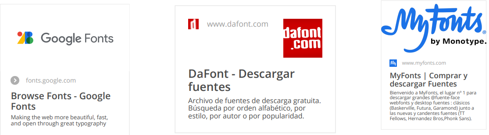

El control de la tipografía en una página web es crucial para garantizar una buena legibilidad y una estética consistente. En CSS avanzado, tienes acceso a un conjunto de propiedades que te permiten controlar diversos aspectos de las fuentes, como su carga dinámica, espaciado, peso y líneas de texto. También exploraremos cómo utilizar fuentes personalizadas con la regla @font-face.
@font-face {
font-family: "Open Sans";
src: url("fonts/OpenSans-Regular.woff2") format("woff2"),
url("fonts/OpenSans-Regular.woff") format("woff");
}
body {
font-family: "Open Sans", sans-serif;
}
Bancos de tipografias

h1 {
letter-spacing: 2px; /* Aumenta el espacio entre letras */
}
p {
line-height: 1.6; /* Aumenta la altura de las líneas */
}
h1 {
font-weight: 700; /* Ancho equivalente en negrita */
}
p {
font-weight: 300; /* Ancho mas delgado */
}
em {
font-style: italic; /* Muestra el texto en cursiva */
}
em {
text-transform: uppercase;
}
@font-face {
font-family: "Roboto";
src: url("fonts/Roboto-Regular.woff2") format("woff2"),
url("fonts/Roboto-Regular.woff") format("woff");
}